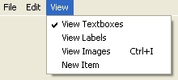

How to Show and Hide Controls
This tutorial is part of an ongoing lesson. Click here if you haven't yet created a menu.
The items on our view menu are:
View Textboxes
View Labels
View Images
Although these are not terribly practical examples of what to place on a View menu, they will help us to demonstrate a few useful techniques. The first of these is how to show and hide controls.
The View Textboxes menu item
Controls on a form can be hidden or shown as the need arises. The process is quite easy. Access the code for your View Textboxes menu item. Type the following for the menu item:
Textbox1.Visible = False
Textbox2.Visible = False
Run your code and test it out. Click View > View Textboxes. The two textboxes you added should disappear.
To hide a control, simply set it's Visible property to False. If you want to get it back, show a control by setting the Visible property to True.
A good idea is to have the ability to toggle a control on and off: One click of a menu item could hide the control, and a second click could show it again. You can do that with your menus.
Each item on your menu has a Checked property. If set to True, you'll see a tick appear next to the menu item. As in the image below:

You can use this Checked property as a toggle: If the menu item is ticked, display the textbox; if it's not ticked, hide the textbox.
Delete or comment out the line of code for your View Textboxes menu item. Add the following line in its place (this assumes that you've Named your View Textboxes menu item as mnuViewTextboxes. If you've named it something else, changed the part before the full stop):
mnuViewTextboxes.Checked = Not mnuViewTextboxes.Checked
This line toggles the Tick on and off. The part before the equals sign sets the Checked property of our menu item. The part after the equals sign sets it to whatever it's NOT at the moment. So if Checked is True, it's NOT False. In which case, set it to False.
Run your code and test it out. Click View > View Textboxes. Have a look at the menu again, and you'll see a tick appear. Click View > View Textboxes again and the tick will disappear.
We can show the textboxes if there's a tick next to View Textboxes. Just test the value of the Checked property in an If Statement. Add this If Statement just below your first line:
If mnuViewTextboxes.Checked = True Then
TextBox1.Visible = True
TextBox2.Visible = True
Else
TextBox1.Visible = False
TextBox2.Visible = False
End If
So the If Statement examines the Checked property of the menu item. If it's True, make the textboxes Visible ; Else, we set the Visible property of the textboxes to False.
Before you run your code, return to the Form view by holding Shift + F7 on your keyboard. When you have your form displayed, and not the code, click on textbox1 to select it. In the property box, locate the Visible property and set it to False. Do the same for texbox2. When your form runs, the two textboxes will then be hidden.
Now run your programme and test out your new menu. Click View > View Textboxes and see if they toggle on and off.
Exercise
Add two labels to your form. Write code to toggle the labels on and off. The two labels should disappear with the textboxes. And they should reappear when the menu item is toggled to the on position
In the next part, we'll see how we can insert images. We'll use the View Images menu for that.